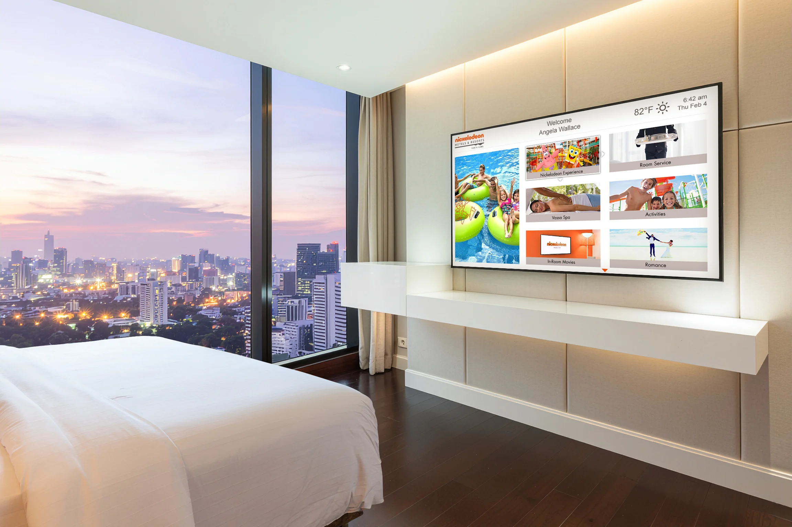

Nickelodeon interactive tv
Case Study
Overview
As part of a UX/UI team, I designed the television interface for Nickelodeon Hotels & Resorts Punta Cana guest suites. The work brought Nickelodeon’s visual identity into an in-room experience guests could read from a distance and navigate with a remote.
Design priorities
- Keep text and controls legible across the room
- Make remote-control navigation simple and predictable
- Carry the resort’s brand across guest touchpoints
Designing for the room

A TV interface is seen from across a room and controlled one step at a time. I used larger type, clear contrast, and simple screen elements so guests could find information without the precision of a touch screen or mouse.
GoalMake the in-room experience legible and easy to move through with a remote.
Researching the brand

I reviewed Nickelodeon’s style guidance and public-facing materials, including photography, copy, and visual details. Those references helped the TV screens feel connected to the wider resort experience while meeting the practical needs of the room.
- Compared brand references and existing guest touchpoints
- Considered audience, setting, and visibility
- Applied the approved direction to the existing app framework
Mockups and feedback

I started with the home screen and selected inner screens so the client could review the branded experience before the remaining screens were produced. Feedback was discussed with design and development, then carried into the next round of mockups.

Annotated screens made requested changes concrete. When feedback affected functionality, I checked the proposed behavior with the development team before refining the visual design.
Production and validation
Using the approved mockups, I created and exported graphics in the file structures required by development. The TV interface used SVG graphics where appropriate and was styled with HTML and CSS; related assets also supported mobile and kiosk applications.
Before handoff
- Checked app builds and screen behavior in virtual and available physical devices
- Investigated graphic, code, software, or data issues with the team
- Documented issues in Jira and retested fixes with QA
- Packaged approved assets for development and database handoff
Reflection
The project connected brand expression to the realities of television viewing, remote navigation, and cross-device production. Working across mockups, assets, and testing helped the team carry a consistent experience from client review into implementation.